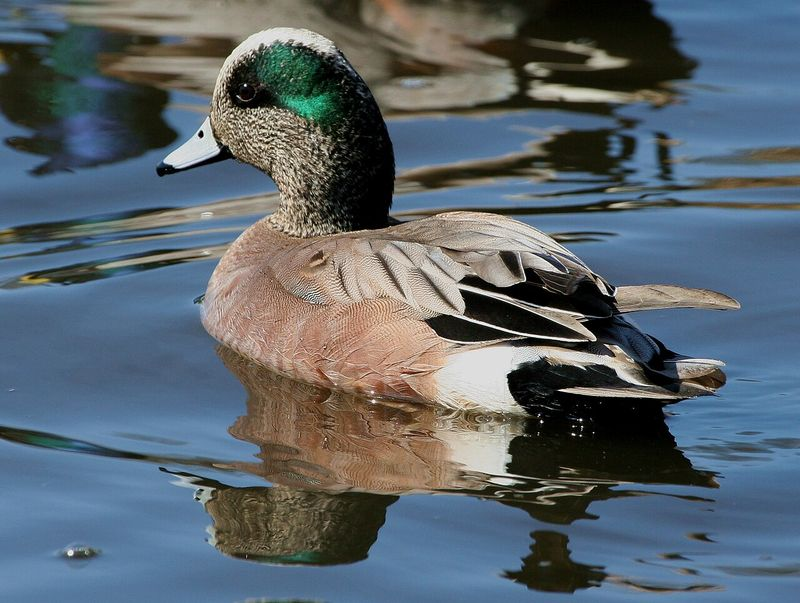
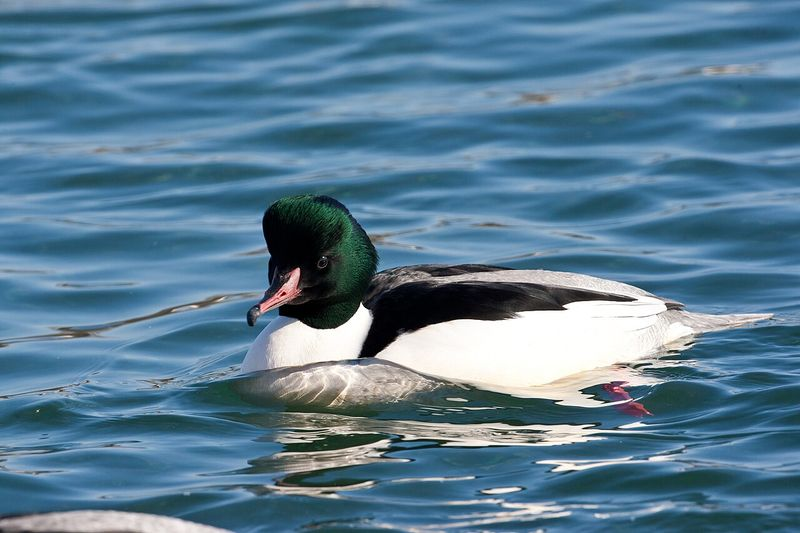
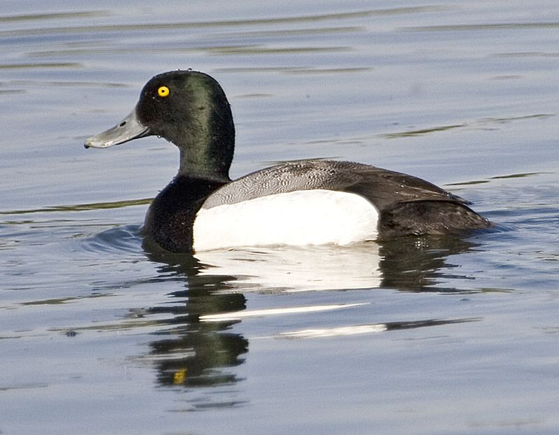
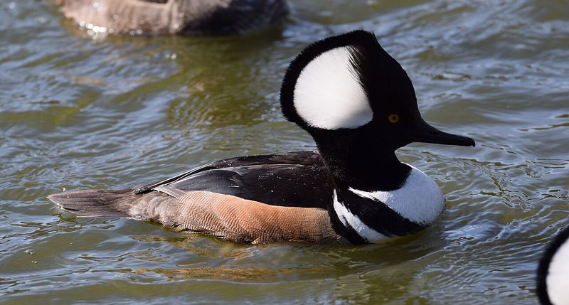

American Wigeon PHOTO · amwi.jpg
Department of the Interior. U.S. Fish and Wildlife Service. National Conservation Training Center. 10/1997-8888 · Public domain · source



Common Merganser PHOTO · come.jpg
Pacific Southwest Region USFWS from Sacramento, US · Public domain · source


Gadwall PHOTO · gadw.jpg
Department of the Interior. U.S. Fish and Wildlife Service. National Conservation Training Center. 10/1997-8888 · Public domain · source

Greater Scaup PHOTO · grsc.jpg
Department of the Interior. U.S. Fish and Wildlife Service. National Conservation Training Center. 10/1997-8888 · Public domain · source


Harlequin Duck PHOTO · hadu.jpg
Department of the Interior. U.S. Fish and Wildlife Service. National Conservation Training Center. 10/1997-8888 · Public domain · source

Hooded Merganser PHOTO · home.jpg
U.S. Fish and Wildlife Service Southeast Region · Public domain · source


Lesser Scaup PHOTO · lesc.jpg
Pacific Southwest Region USFWS from Sacramento, US · Public domain · source